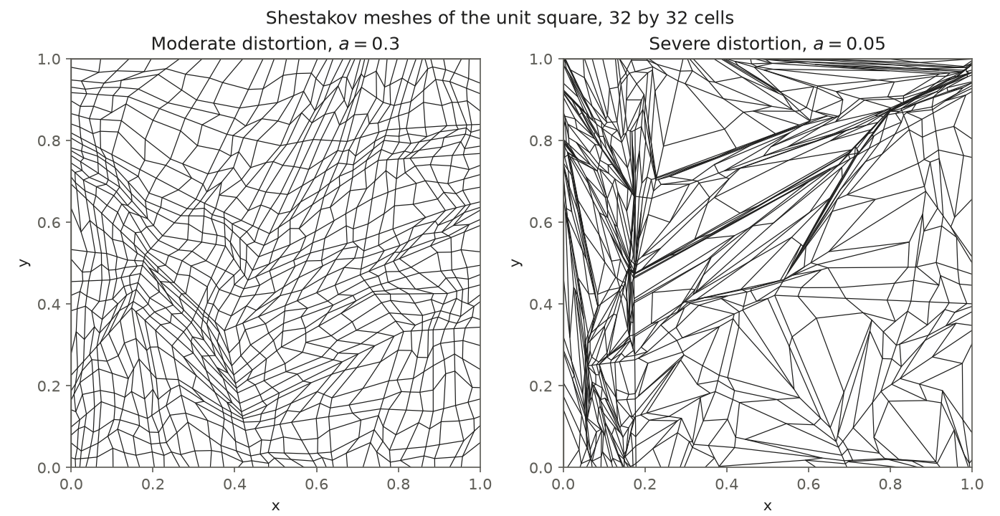

5.3.4. DSA on Distorted Meshes: Why the Penalty Length Is Capped

The modified interior penalty (MIP) form that OpenSn uses for WGDSA and TGDSA adds a penalty proportional to \(D/h_\perp\) on every face, and the penalty must dominate the consistency terms of the form for the diffusion operator to be symmetric positive definite (SPD). How much penalty that takes depends on the shape of the cell. With PWLD the basis is linear on each side triangle of a quadrilateral (the triangle between an edge and the average of the cell’s vertices), and on a skinny side triangle the normal derivative of a basis function on the edge is large compared with its gradient inside the cell: the required penalty grows like \(1/h_k\), with \(h_k\) the height of the side triangle.
The default penalty length, wgdsa_h_perp_convention = "face_side", is the face length \(V/A_f\) capped by four times the smallest side-triangle height of the face, with a factor 2 on polygons and polyhedra. On regular cells the cap is inactive. OpenSn’s original choice, "cell", uses the face length on quadrilaterals without the factor 2 and without a cap, which is too little penalty on skinny side triangles.
This tutorial measures the spectral radius of source iteration (SI) with WGDSA on meshes of increasing distortion with both penalty lengths. The DSA Options on Regular Grids tutorial explains the measurement and the other DSA options.
5.3.4.1. Shestakov’s random mesh
Shestakov’s mesh (Shestakov, Kershaw and Zimmerman, Nucl. Sci. Eng. 105, 88 (1990)) is a standard test of robustness on distorted quadrilaterals. Starting from the unit square, every quadrilateral is split into four: a new node on each side at a random fraction in \([a, 1 - a]\) of its length, and an interior node at random bilinear weights in the same range. \(a = 0.5\) gives the uniform mesh and smaller \(a\) more distortion. If one of the four new cells has a side triangle with less than \(10^{-3}\) of the mean side-triangle area, the nodes are drawn again, with less randomness after a hundred tries, so every cell is valid for PWLD. When a parent cell is not convex, the corners next to its reflex corner are moved to intersections of the side lines first, so that the interior node stays inside.
The functions below build the node lattice with NumPy, write it as a Wavefront OBJ file of quadrilaterals, and read it with FromFileMeshGenerator. The distorted meshes depend on the random stream, and NumPy does not guarantee that the stream of default_rng stays the same across versions: with another generator and the same seed, the severe mesh of this tutorial cannot even be subdivided. The two distorted meshes used below, built by shestakov_lattice with seed=0, are therefore
stored next to this notebook as shestakov_a0.3.obj and shestakov_a0.05.obj and read from there; shestakov_lattice builds a new one when a file is missing. Run the generated script with four MPI processes.
[ ]:
import math
from pathlib import Path
import numpy as np
from mpi4py import MPI
from pyopensn.aquad import GLCProductQuadrature2DXY
from pyopensn.context import Finalize
from pyopensn.math import VectorSpatialFunction
from pyopensn.mesh import FromFileMeshGenerator, KBAGraphPartitioner
from pyopensn.solver import DiscreteOrdinatesProblem, SteadyStateSourceSolver
from pyopensn.source import VolumetricSource
from pyopensn.xs import MultiGroupXS
comm = MPI.COMM_WORLD
rank = comm.rank
[ ]:
def cross(u, v):
return u[0] * v[1] - u[1] * v[0]
def side_quality(corners):
# Smallest PWLD side-triangle area over the mean, for quadrilaterals (..., 4, 2)
r = corners.mean(axis=-2)[..., None, :] - corners
e = np.roll(corners, -1, axis=-2) - corners
areas = e[..., 0] * r[..., 1] - e[..., 1] * r[..., 0]
return areas.min(axis=-1) / np.abs(areas).mean(axis=-1)
def cells_of(lattice):
# Counter-clockwise corners of every cell of a node lattice
return np.stack(
[lattice[:-1, :-1], lattice[1:, :-1], lattice[1:, 1:], lattice[:-1, 1:]], axis=2
)
def intersect(p1, p2, p3, p4):
# Intersection of the line through p1, p2 with the line through p3, p4
(x1, y1), (x2, y2), (x3, y3), (x4, y4) = p1, p2, p3, p4
d = (x4 - x3) * (y2 - y1) - (x2 - x1) * (y4 - y3)
c34, c12 = x4 * y3 - x3 * y4, x2 * y1 - x1 * y2
return np.array(
[((x2 - x1) * c34 - (x4 - x3) * c12) / d, ((y2 - y1) * c34 - (y4 - y3) * c12) / d]
)
def convex_corners(p1, p2, p3, p4):
# Move the corners next to a reflex corner so that bilinear points stay inside the cell
if cross(p2 - p1, p3 - p2) < 0.0:
return intersect(p3, p2, p1, p4), p2, intersect(p1, p2, p3, p4), p4
if cross(p3 - p2, p4 - p3) < 0.0:
return p1, intersect(p4, p3, p2, p1), p3, intersect(p2, p3, p4, p1)
if cross(p4 - p3, p1 - p4) < 0.0:
return intersect(p3, p4, p1, p2), p2, intersect(p1, p4, p3, p2), p4
if cross(p1 - p4, p2 - p1) < 0.0:
return p1, intersect(p4, p1, p2, p3), p3, intersect(p2, p1, p4, p3)
return p1, p2, p3, p4
def shestakov_lattice(levels, a, seed=0, min_quality=1.0e-3, max_tries=200):
# Node lattice (n + 1, n + 1, 2) of the unit square with n = 2^levels cells per side
rng = np.random.default_rng(seed)
n = 2**levels
lattice = np.zeros((n + 1, n + 1, 2))
for i in (0, 1):
for j in (0, 1):
lattice[i * n, j * n] = (i, j)
for level in range(levels):
step = n // 2**level
half = step // 2
for k1 in range(0, n, step):
k2, k3 = k1 + step, k1 + half
for l1 in range(0, n, step):
l2, l3 = l1 + step, l1 + half
for t in range(max_tries):
# Less randomness after half of the tries, none at the last one
if t < max_tries // 2:
at = a
else:
at = a + (0.5 - a) * (t - max_tries // 2 + 1) / (max_tries - max_tries // 2)
def draw():
return at + rng.random() * (1.0 - 2.0 * at)
if l1 == 0:
r = draw()
lattice[k3, l1] = r * lattice[k1, l1] + (1 - r) * lattice[k2, l1]
r = draw()
lattice[k2, l3] = r * lattice[k2, l1] + (1 - r) * lattice[k2, l2]
r = draw()
lattice[k3, l2] = r * lattice[k1, l2] + (1 - r) * lattice[k2, l2]
if k1 == 0:
r = draw()
lattice[k1, l3] = r * lattice[k1, l1] + (1 - r) * lattice[k1, l2]
r, s = draw(), draw()
p1, p2, p3, p4 = convex_corners(
lattice[k1, l1], lattice[k2, l1], lattice[k2, l2], lattice[k1, l2]
)
lattice[k3, l3] = (
r * s * p1 + r * (1 - s) * p4 + (1 - r) * s * p2 + (1 - r) * (1 - s) * p3
)
children = lattice[k1:k2 + 1:half, l1:l2 + 1:half]
if side_quality(cells_of(children)).min() >= min_quality:
break
else:
raise RuntimeError("no valid subdivision of a Shestakov cell")
lattice[0, :, 0], lattice[-1, :, 0] = 0.0, 1.0
lattice[:, 0, 1], lattice[:, -1, 1] = 0.0, 1.0
return lattice
def read_lattice(path):
# Node lattice (n + 1, n + 1, 2) of an OBJ file written by make_mesh
lines = path.read_text().splitlines()
vertices = [line.split()[1:3] for line in lines if line.startswith("v ")]
n = math.isqrt(len(vertices)) - 1
return np.array(vertices, dtype=float).reshape(n + 1, n + 1, 2)
def make_mesh(lattice, name):
# Write the lattice as an OBJ file of quadrilaterals, read it, and remove the file
path = Path(f"{name}_tmp.obj")
n = lattice.shape[0] - 1
if rank == 0:
with open(path, "w") as f:
f.write(f"o {name}\n")
for i in range(n + 1):
for j in range(n + 1):
f.write(f"v {lattice[i, j, 0]:.17g} {lattice[i, j, 1]:.17g} 0\n")
for i in range(n):
for j in range(n):
v = [i * (n + 1) + j + 1, (i + 1) * (n + 1) + j + 1]
f.write(f"f {v[0]} {v[1]} {v[1] + 1} {v[0] + 1}\n")
comm.Barrier()
mesh = FromFileMeshGenerator(
filename=str(path),
partitioner=KBAGraphPartitioner(nx=2, ny=2, xcuts=[0.5], ycuts=[0.5]),
).Execute()
comm.Barrier()
if rank == 0:
path.unlink()
mesh.SetOrthogonalBoundaries()
mesh.SetUniformBlockID(0)
return mesh
5.3.4.2. Measuring the spectral radius
The measurement is the one of the regular-grid tutorial: one group with \(c = 0.9999\), a 10 mfp square with vacuum boundaries and the Marshak closure, one Richardson iteration per Execute, and \(\rho\) from the last five ratios of successive changes of the scalar flux. A run also stops when the change grows past \(10^{10}\) times the flux norm, so a diverging iteration ends with \(\rho > 1\).
The WGDSA diffusion problem is solved either directly (wgdsa_solver_policy = "direct", PETSc LU) or iteratively ("iterative", conjugate gradients with BoomerAMG). The default, "auto", solves directly on one process when the problem has at most wgdsa_direct_solve_threshold (20000) unknowns and iteratively otherwise, so both cases occur in practice.
[ ]:
def source_shape(point, num_groups):
# Smooth and without symmetry, so that every error mode is present
value = 1.0 + 0.5 * math.sin(7.3 * point.x + 1.1) * math.cos(5.9 * point.y + 0.4)
return [value] * num_groups
def spectral_radius(mesh, h_perp, solver_policy, sigma_t=10.0, c=0.9999, max_iterations=60,
apply_wgdsa=True):
xs = MultiGroupXS()
xs.CreateSimpleOneGroup(sigma_t, c)
problem = DiscreteOrdinatesProblem(
mesh=mesh,
num_groups=1,
groupsets=[
{
"groups_from_to": (0, 0),
"angular_quadrature": GLCProductQuadrature2DXY(
n_polar=4, n_azimuthal=8, scattering_order=0
),
"inner_linear_method": "classic_richardson",
# No iterate misses this tolerance: each Execute performs one iteration
"l_abs_tol": 1.0e10,
"l_max_its": 10,
"apply_wgdsa": apply_wgdsa,
"wgdsa_l_abs_tol": 1.0e-12,
"wgdsa_l_max_its": 500,
"wgdsa_solver_policy": solver_policy,
"wgdsa_h_perp_convention": h_perp,
}
],
xs_map=[{"block_ids": [0], "xs": xs}],
volumetric_sources=[
VolumetricSource(block_ids=[0], func=VectorSpatialFunction(source_shape))
],
boundary_conditions=[
{"name": name, "type": "vacuum"} for name in ("xmin", "xmax", "ymin", "ymax")
],
options={"verbose_inner_iterations": False},
)
solver = SteadyStateSourceSolver(problem=problem)
solver.Initialize()
changes = []
previous = np.array(problem.GetPhiNewLocal())
for _ in range(max_iterations):
solver.Execute()
current = np.array(problem.GetPhiNewLocal())
change = math.sqrt(comm.allreduce(float(np.sum((current - previous) ** 2))))
norm = math.sqrt(comm.allreduce(float(np.sum(current**2))))
changes.append(change)
previous = current
if change < 1.0e-10 * norm or change > 1.0e10 * norm:
break
# The first change is the first iterate itself, not a difference of iterates
used = min(5, len(changes) - 2)
return (changes[-1] / changes[-1 - used]) ** (1.0 / used)
5.3.4.3. Regular, moderate and severe meshes
The study uses three 32 by 32 meshes: the regular one (\(a = 0.5\)), a moderately distorted one (\(a = 0.3\)) and a severely distorted one (\(a = 0.05\)), and solves each with both penalty lengths and both diffusion solvers. On the severe mesh it also measures SI without DSA, for comparison.
[ ]:
meshes = {"Regular": 0.5, "Moderate": 0.3, "Severe": 0.05}
rates = {}
# The distorted meshes are stored next to this notebook (see above)
here = Path(__file__).parent if "__file__" in globals() else Path.cwd()
for label, a in meshes.items():
stored = here / f"shestakov_a{a}.obj"
lattice = read_lattice(stored) if stored.exists() else shestakov_lattice(5, a)
if rank == 0:
quality = side_quality(cells_of(lattice)).min()
print(f"{label} mesh (a = {a}) smallest side-triangle quality={quality:.4f}")
mesh = make_mesh(lattice, f"shestakov_a{a}")
for h_perp in ("cell", "face_side"):
for solver_policy in ("direct", "iterative"):
rates[label, h_perp, solver_policy] = spectral_radius(mesh, h_perp, solver_policy)
if label == "Severe":
# SI without DSA on the same mesh, for comparison
unaccelerated = spectral_radius(
mesh, "face_side", "direct", max_iterations=400, apply_wgdsa=False
)
if rank == 0:
for (label, h_perp, solver_policy), rho in rates.items():
print(f"{label} mesh {h_perp} {solver_policy} spectral radius={rho:.4f}")
print(f"Severe mesh without DSA spectral radius={unaccelerated:.4f}")
assert rates["Severe", "face_side", "direct"] < 0.8
assert rates["Severe", "cell", "direct"] > 1.0
assert rates["Severe", "cell", "iterative"] > unaccelerated
Mesh |
Smallest side-triangle quality |
|
|
|
|
|---|---|---|---|---|---|
Regular, \(a = 0.5\) |
1 |
0.216 |
0.216 |
0.217 |
0.217 |
Moderate, \(a = 0.3\) |
0.39 |
0.336 |
0.336 |
0.338 |
0.338 |
Severe, \(a = 0.05\) |
0.0054 |
1.54 (diverges) |
0.971 |
0.653 |
0.653 |
The side-triangle quality of a cell is the area of its smallest side triangle over the mean side-triangle area: 1 for a parallelogram, near 0 for a cell with a skinny side triangle.
On the regular and moderately distorted meshes the two penalty lengths give the same spectral radius to within 0.003, and the direct and iterative diffusion solves agree, as they must for an SPD operator. On the severe mesh "face_side" still converges, at the same rate with either solver, but "cell" fails in two ways:
With the direct solve, SI with WGDSA diverges: the change grows by a factor of 1.54 in every iteration. The exact correction amplifies some error modes instead of removing them, which is the behavior of an indefinite diffusion operator: the
"cell"length can make the operator indefinite on strongly distorted cells (see the groupset section of the user guide).With conjugate gradients, the iteration converges with \(\rho = 0.971\), slower than SI without any acceleration on the same mesh (\(\rho = 0.962\), measured above). Conjugate gradients require an SPD operator. With
wgdsa_verbose = True, every diffusion solve reports the statusfailedafter three iterations, and its inaccurate correction is applied anyway.
In both cases nothing in the default output points to the diffusion operator. Setting wgdsa_verbose = True prints the status of every diffusion solve.
5.3.4.4. What to take away
Keep the default
"face_side"penalty length on meshes that are not orthogonal. It costs nothing on regular cells and keeps the diffusion operator SPD on distorted ones.On the regular and moderate meshes of this study,
"cell"converges as fast as"face_side"with both diffusion solvers. On the severe mesh, SI with WGDSA diverges with a direct diffusion solve and converges more slowly than without DSA with conjugate gradients, with no warning in either case.The diffusion solves report a failure only with
wgdsa_verbose = True; a stalled iteration is the visible symptom.Distortion slows DSA even with
"face_side"(\(\rho\) about 0.65 on the severe mesh against 0.22 on the regular one), so mesh quality still matters.
5.3.4.5. Finalize (for Jupyter Notebook only)
In script mode, PyOpenSn handles finalization automatically. In a Jupyter kernel, finalize OpenSn before MPI.
[ ]:
if "opensn_console" not in globals():
from IPython import get_ipython
if get_ipython() is not None:
Finalize()
MPI.Finalize()